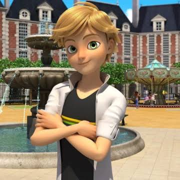
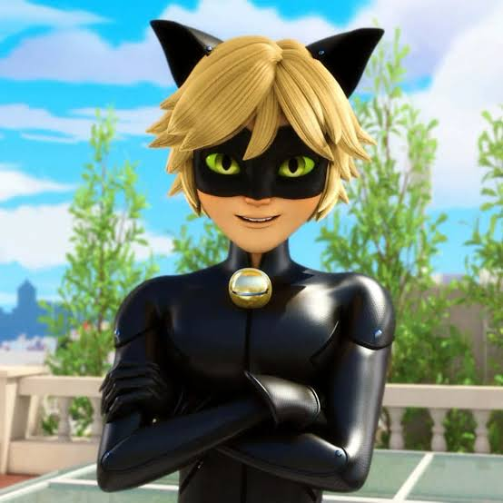
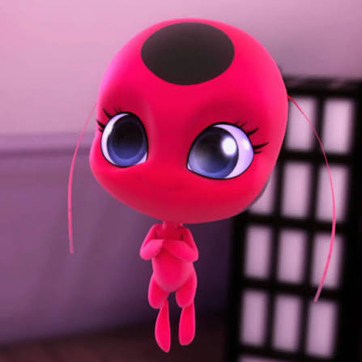
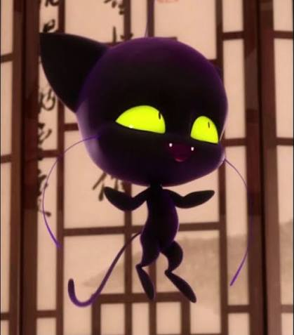
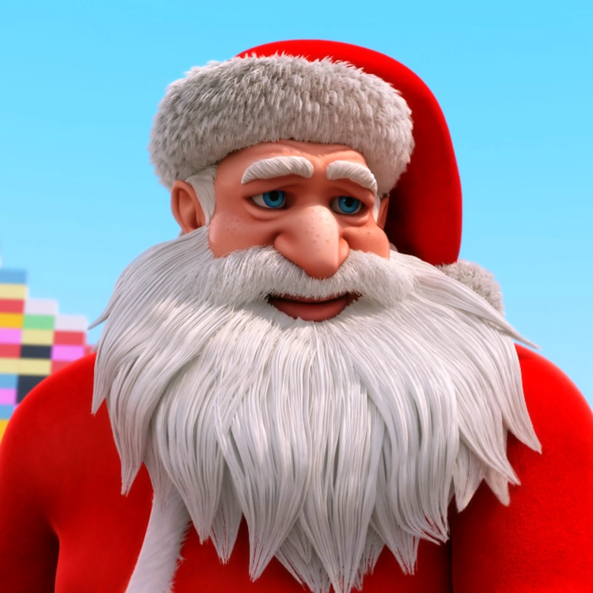

MOMENTOS INOLVIDABLES
Galería navideña
Revive los momentos más especiales de esta aventura llena de magia, amistad y Navidad.
UNA NAVIDAD EN PARÍS
La magia de la Navidad llega a París con una aventura inolvidable.
DESCUBRIR HISTORIAMIRACULOUS WORLD · CHRISTMAS
La Navidad ha llegado a París, pero este año será diferente para Adrien, quien tendrá que pasar estas fiestas sin su madre.
Mientras Marinette disfruta de la celebración junto a su familia, Adrien cree que su padre no desea compartir la Navidad con él y decide salir de casa convertido en Cat Noir.
Marinette, preocupada por su amigo, se transforma en Ladybug para encontrarlo. Sin embargo, un encuentro inesperado con Santa Claus provoca una aventura que pondrá en peligro la Navidad de todo París.
¿Podrán Ladybug y Cat Noir recuperar el espíritu navideño y salvar esta noche tan especial?
Título: Santa Claws
Serie: Miraculous: Las aventuras de Ladybug
Temporada: 2
Año: 2016
Género: Animación, aventura y comedia
Ambientación: París en Navidad
LOS PROTAGONISTAS
Héroes, amigos y personajes que forman parte de esta mágica aventura navideña.
Es una joven creativa, amable y soñadora que intenta disfrutar de la Navidad junto a sus seres queridos.
Valiente y decidida, utiliza su poder y su ingenio para proteger París y salvar la Navidad.

Es un joven amable que vive una Navidad diferente y busca encontrar nuevamente la alegría de estas fiestas.

Divertido, valiente y un poco bromista. Acompaña a Ladybug en la aventura para salvar París.

Es la pequeña compañera mágica de Marinette y la fuente de sus poderes como Ladybug.

Es el compañero de Adrien. Le encanta el queso y tiene una personalidad divertida y despreocupada.

Su encuentro con Ladybug y Cat Noir desencadena una situación inesperada durante la Nochebuena.
Es la transformación de Santa Claus después de ser akumatizado por Hawk Moth.
MOMENTOS INOLVIDABLES
Revive los momentos más especiales de esta aventura llena de magia, amistad y Navidad.
UNA AVENTURA INOLVIDABLE
La Navidad ha llegado a París. Acompaña a Ladybug y Cat Noir en una aventura llena de emociones, sorpresas y espíritu navideño.
Una Navidad diferente para Adrien. Una misión especial para Ladybug. Y un visitante inesperado que cambiará la Nochebuena de París.
Disfruta del contenido audiovisual desde el canal oficial de Miraculous.